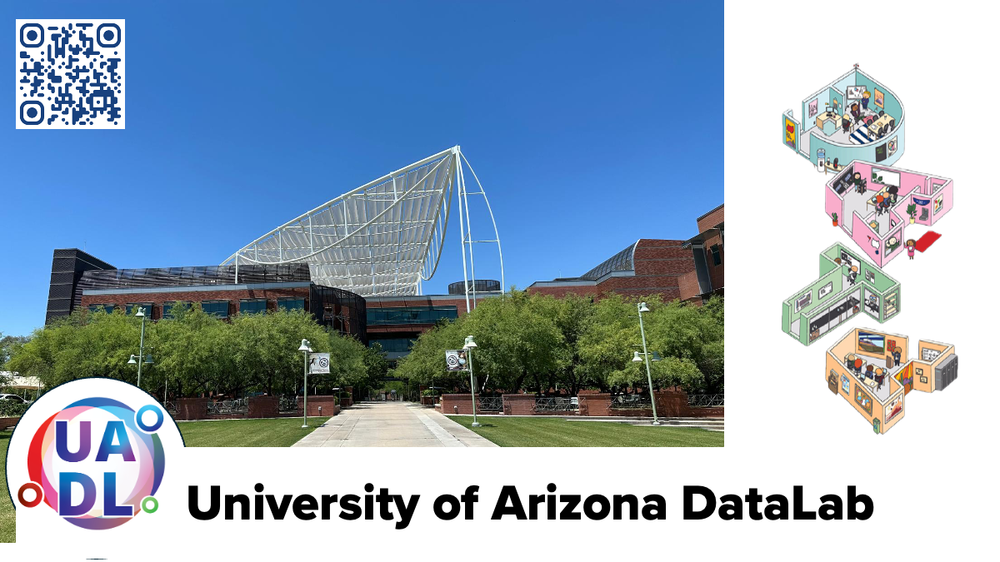

Welcome to the University of Arizona DataLab Github!¶

(URL: https://ua-datalab.github.io)
Workshops¶
Our workshops focus on promoting Data Science Literacy among the university community. This ranges from satisfying curiosity to diverse topics in Statistics and Data Science to Machine Learning, to promote skill development in data modeling based on Machine Learning and Deep Learning algorithms across the wide science community of our University.
Fall 2025 Workshops¶
Are you interested in improving your professional skills in data analytics tools, methods, scientific analysis and statistics?
The University of Arizona DataLab team invites you to attend our weekly Workshops. All sessions are conducted in hybrid mode, unless otherwise stated.
%%{init: { 'logLevel': 'debug', 'theme': 'base' } }%%
timeline
title U of Arizona DataLab Workshops Fall 2025
Tuesday : Research Productivity (†)
: Foundational Open Science Skills
: Foundation Models to Autonomous Agents: From Neural Networks to Modern AI Systems
: Python & AI for Data Analysis
: AI Makerspace Meet Up
Wednesday : Research Productivity (†)
: Data Science Tapas
Thursday : Research Productivity (†)
: Geospatial AI (†††)
: AI & Bioinformatics
Friday : CyVerse Office Hours (††)
: CyVerse Webinars (††)(†) This three-session series will be offered twice in Fall 2025. (††) Alternating on Fridays. (†††) Sep 4, 11, 18
University of Arizona DataLab Fall 2025 workshops and training materials¶
Weekly Support Activities ¶
- CyVerse Office Hours [Register] - BSRL Lobby
- AI Makerspace Meet-Up. Enrique Noriega, Carlos Lizárraga. Meet-Ups:(Resuming Aug 26, 2025) Tuesdays 3:30 - 4:30 PM @ Snakes & Lattes Tucson (988 E University Blvd, Tucson, AZ).
Please visit our Events Calendar for weekly activities details.
Fall 2025 Workshops¶
[ Running: Aug 26 - Oct 30]
- Bioinformatics & AI. Michele Cosi.
- Data Science Tapas. Wednesdays @ 1:00 - 2:00 PM (Online ).
- Foundational Open Science Skills. Michele Cosi. Tuesdays @ 11:00 AM - 1:00 PM. (Online ).
- Foundation Models to Autonomous Agents: From Neural Networks to Modern AI Systems. Enrique Noriega, Carlos Lizárraga. Tuesdays @ 1:00 PM - 2:00 PM.
- Python & AI for Data Analysis. Carlos Lizárraga. Tuesdays @ 2:00 PM - 3:00 PM.
- Research Productivity.
Rudy Salcido. (Online ).
[Series 1: Sep 9, Sep 30, Oct 21; Series 2: Nov 4 - Nov 6]. All sessions @ 10:00 AM - 11:30 AM.
Previous DataLab Workshops Learning Resources¶
- Advanced AI for Healthcare. Greg Chism.
- AI & Data in Public Health: A Non-Coder's Toolkit!. Carlos Lizárraga.
- Classical Machine Learning. Carlos Lizárraga.
- Craking the Coding Interview. Mithun Paul.
- Data Engineering Technologies. Shashank Yadav.
- Data Science Tools and Methods in Earth Sciences. Carlos Lizárraga.
- Deep Learning. Mithun Paul.
- Functional Open Science Skills for AI/ML Applications. Michele Cosi, Carlos Lizárraga, Enrique Noriega, Leonardo Soto Hernandez.
- Graph Machine Learning. Shashank Yadav.
- Natural Language Processing for All. Megh Krishnaswamy, Mithun Paul.
- Neural Networks. Brennon Huppenthal, Megh Krishnaswamy.
- NextGen Geospatial. Jeff Gillan.
- Prompt Engineering & AI Application Deployment - GPT 101 (Previous version 2023). Tyson Swetnam.
- Previous Data Science Institute Workshops. Carlos Lizárraga.
University of Arizona HPC¶
Other learning resources¶
- Data Science Learning Resources wiki
- DataLab Projects
- AI Tools Landscape
- AI Landscape & Prompt Engineering
University of Arizona DataLab Social¶
- Github
- Bluesky Social
- Facebook Page
- Workshop videorecordings YouTube Channel
Questions / Contact: Please join the UA Data Science Slack channel:
Please visit the University of Arizona Data Science Institute Events Calendar for more detailed information.
University of Arizona DataLab, is a strategic program between the University of Arizona's Data Science Institute, and CyVerse.
 |